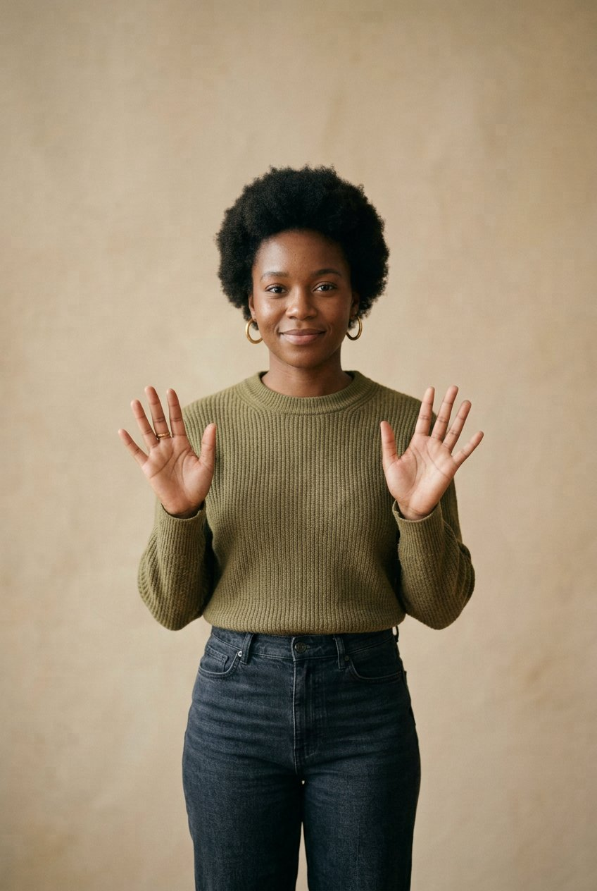
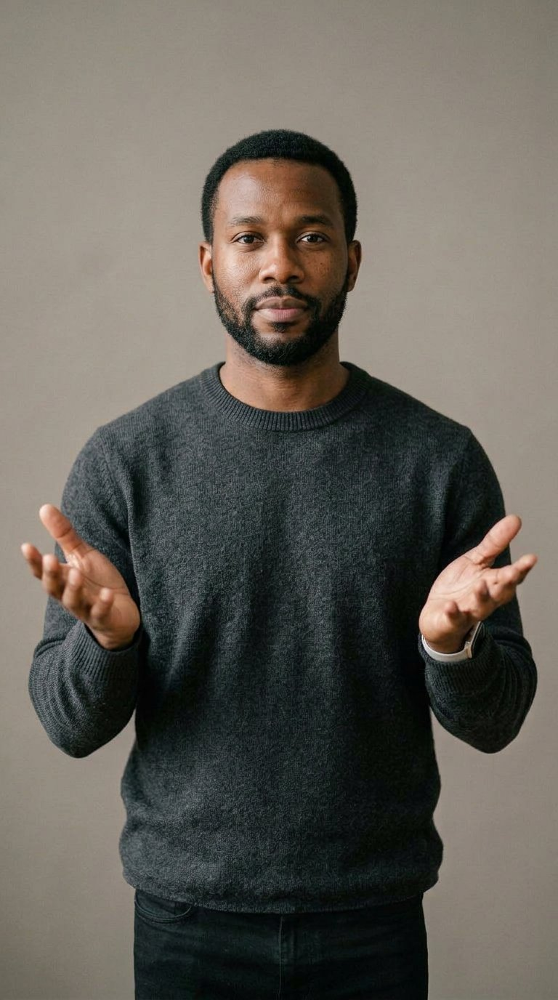
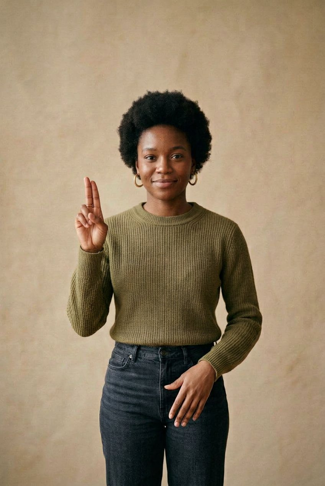
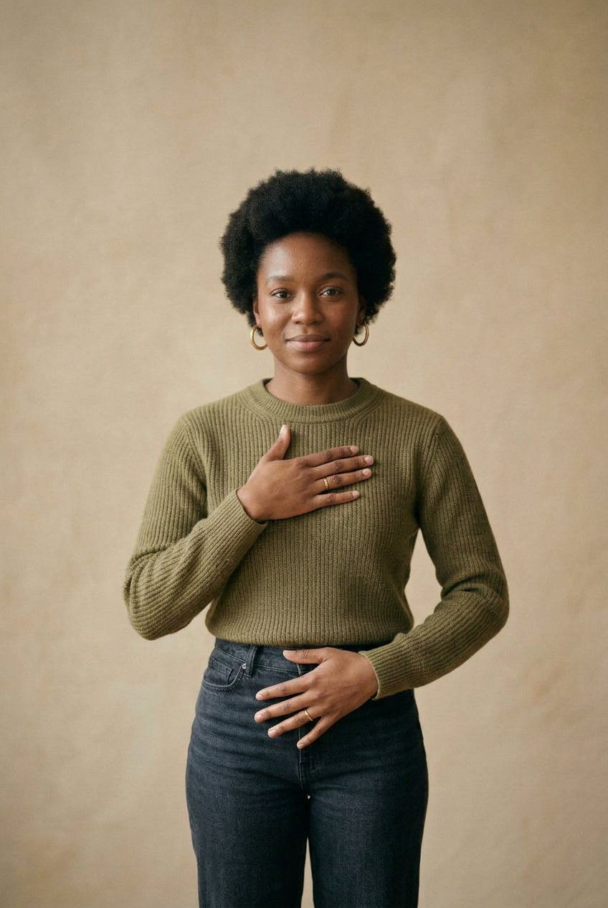
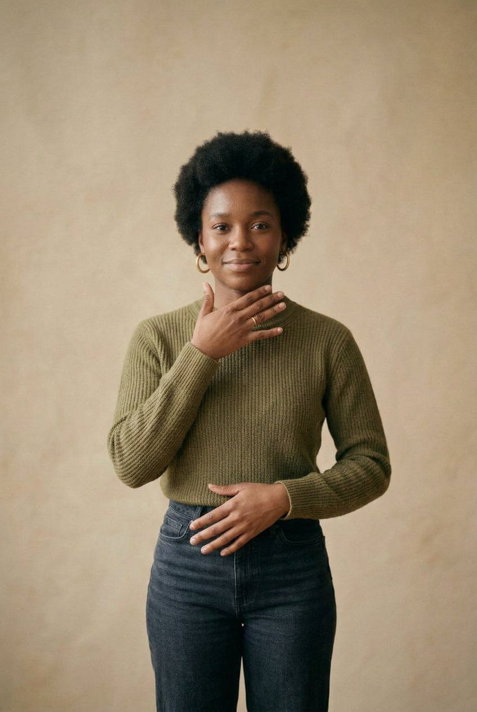
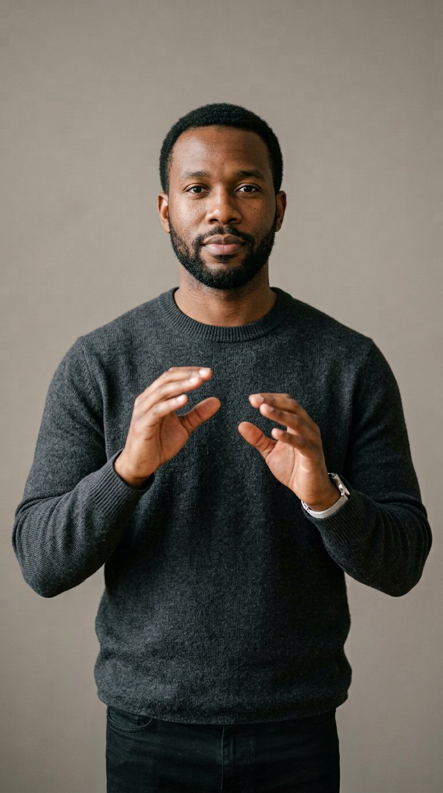
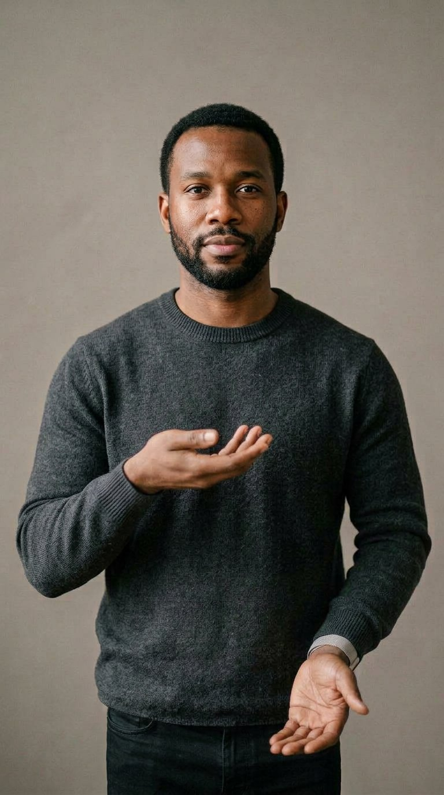
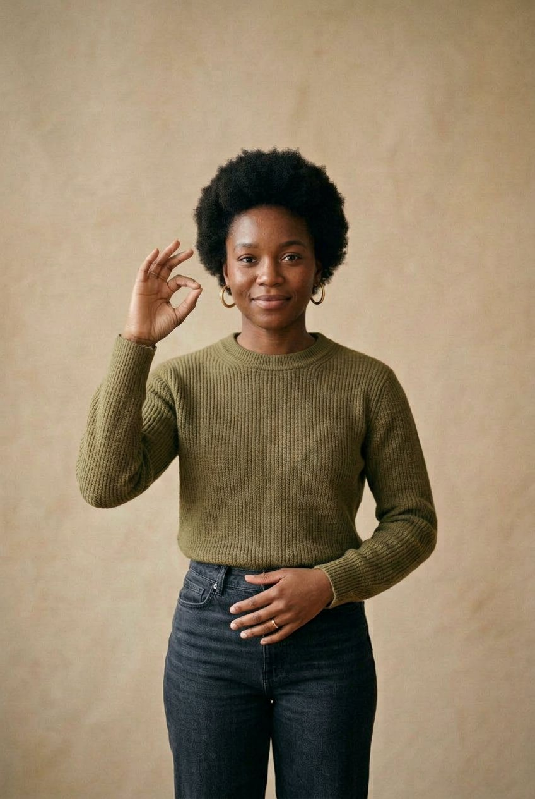

Every voice deserves to be understood.
Unmute is two-way sign-language translation for hospitals — so a Deaf patient is understood at the point of care, not when an interpreter becomes free.



The patient signs. The clinician speaks. Both are understood.
Pre-seed, 18 months
The vocabulary that carries routine risk.
Contents of this
presentation
Ten sections, following the Founders Lab Demo Day brief.

Deaf ASL users to certified interpreters in the United States, before accounting for geography or hours.
Both directions.
Sign to English, and English back to sign, without booking anyone.
A hospital conversation,
handled in the room.
Built for the ward, not the app store. Sold to the department that carries the compliance obligation.
Fewer than one in ten encounters with a Deaf patient involves a professional interpreter. 63.9% rely on a family member. In the same 166-physician survey, 90.4% of staff knew no sign language at all.
Consent, allergies and dosages get relayed by a relative, or written on paper. Care is improvised exactly where the vocabulary matters most.
The interpreter
is not in the room.

Akeely et al., Cureus, 2022 — n = 166 emergency physicians. Corroborated by Pennsylvania Patient Safety Authority (2025).
continuous ASL
Landmarks extracted on device. Text and speech returned to the clinician, with a confidence value shown, never hidden.
the reply
The clinician's sentence becomes signing, at 30 FPS. A repeat control lets the patient ask for it again.
Solution &
Technology
Unmute does not train a model. It integrates verified engines behind a clinical interface, and owns the three things a vendor cannot: the vocabulary, the confirmation step, and the record.
What the clinician
actually holds.
Four screens. No onboarding, no training session — a nurse has to use this on the first shift.


Growth &
Scalability
Start with the 200 phrases that carry routine clinical risk. Then every department. Then every sign language — the same architecture, a different corpus.
“I built a general-purpose translator first. The first clinician who used it asked what it does about dosages. It did nothing about dosages.”
16–20 people have used the prototype. 21+ have seen it. Each round narrowed the product: general translation → hospital communication → 200 clinical phrases with a confirmation step the patient approves before anything is spoken.

Revenue, and the alternatives.
Hospitals already buy interpreter hours by the block. Priced against the encounter it replaces, not against other apps.
Nothing currently on a ward is both immediate and clinical. That intersection is the product.
Where we actually are.
As of October 2026. Every number below is one we can evidence if asked.
A trained model · a deployed pilot · a signed design partner · revenue. Stated plainly here because it is faster to say it than to be asked, and because the next twelve months are precisely the work of creating them.
One founder.
A specific gap.
Solo at pre-seed, full time. The role that is hired first is clinical, not engineering.
An ASL linguistics advisor for annotation protocol and regional variation, and a clinical advisor for vocabulary and validation. Both are being recruited — neither is claimed as filled.
The machine translation is licensed, not built. What Unmute actually ships is a clinical interface, a vocabulary and a corpus protocol — all of which one person can own, and all of which compound with every conversation.
What $10,000 buys.
Not runway. The specific inputs that turn a prototype into a measured product.
What we do
next.
The jury's recognition would buy the one thing that cannot be faked in a slide: recorded, consented, clinical signing data — and the accuracy figure that comes out of it.
200-term library live. Three design partners using it on shift.
First published clinical accuracy number. First paying care team.
contact@liveunmute.com
app.liveunmute.com